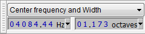
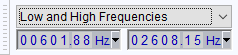

Spectral Selection Toolbar
You must however be in Spectrogram view with Spectral Selection enabled to see the spectral selection, or to apply one of the Spectral edit effects that can filter the spectral selection.
Spectral Selection Toolbar is not visible by default. Select to show it. By default it docks in the lower dock, beside or under Selection Toolbar.
Spectral Selection Toolbar can show information about the spectral selection in two formats: Center frequency and Width  , or Low and High Frequencies
, or Low and High Frequencies  . Choose your preferred option from the dropdown menu above the boxes.
. Choose your preferred option from the dropdown menu above the boxes.
Center frequency and Width boxes
- 
- Center frequency: If there is no spectral selection defined, this shows dashes, representing "none". If there is a spectral selection the center frequency of the selection is displayed.
- Width: If there is no spectral selection defined, this shows dashes, representing "none". If there is a spectral selection this shows the bandwidth (range of frequencies) of the selection.
Low and High Frequency boxes
- 
- Low frequency: If there is no spectral selection defined, this shows dashes, representing "none". If there is a spectral selection the lower frequency boundary of the selection is displayed.
- High frequency: If there is no spectral selection defined, this shows dashes, representing "none". If there is a spectral selection, the upper frequency boundary of the selection is displayed.
Editing the Spectral Selection Toolbar digits
You can edit the individual digits representing frequency in the "Center frequency", "Low frequency" and "High frequency" boxes, or the digits representing bandwidth in the "Width" box. When Spectral Selection is enabled this changes the visible spectral selection in any of the Spectrogram views. Using the mouse, click on a digit in one of the boxes then use the mouse wheel or up and down arrow on the keyboard to increment the value or type the required value. Use left and right arrow to navigate quickly to adjoining digits, and Tab or Shift + Tab to navigate to adjoining boxes.
To clear the spectral selection entirely and return the digits to dashes, you can select any of the digits while in "Center frequency and Width" view, then press Delete (note this is not the Delete key on the numeric keypad). When in "Low and High Frequencies" view you can clear either input box individually with the Delete key.
Selection formats
To access the context menu listing the selection formats click the triangle to right of any box. You can also right-click over any digit in a box, or select any digit then use the Menu key.
The following selection formats are available.
- For Center frequency, Low frequency and High frequency:
- Hz: Hertz, or cycles per second
- kHz: 1000 cycles per second
- For Width:
- octaves: an octave is a doubling of frequency. For example, a range of 1000 to 2000 Hz would be 1 octave.
- semitones + cents: a semitone is the interval between two adjacent notes in a 12-tone scale (one twelfth of an octave). A cent is 1/100th of a semitone.
- decades: a decade is a ten-fold increase in frequency. For example, a range of 500 to 5000 Hz would be 1 decade.